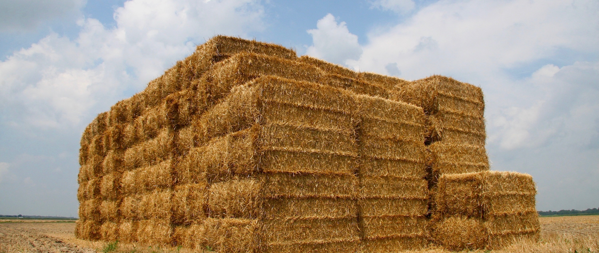

The simplest way to reach us is by email. We aim to respond as soon as possible.
contact@dakotaharvestofhope.org
Dakota Harvest of Hope is growing, and we welcome individuals who want to support our mission.
Based in North Dakota, serving farmers across the region.
We welcome and appreciate donations that support our mission to improve the mental health and well-being of farmers and agricultural workers.
At this time, we accept donations by check. To receive mailing instructions or discuss donation options, please contact us:
donations@dakotaharvestofhope.org
We will provide instructions and ensure you receive a donation receipt.